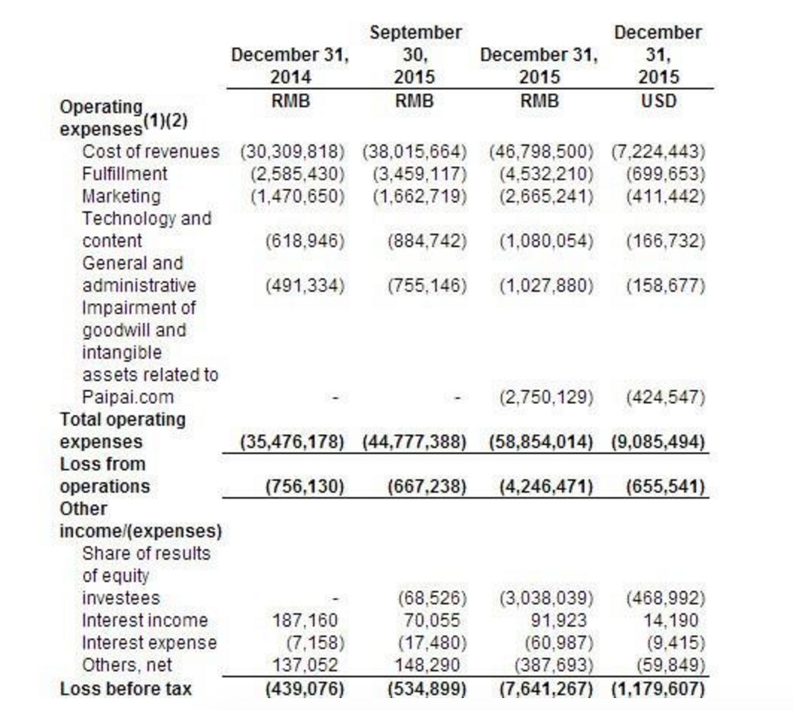

说说电商
1999 李国庆 当当网
易趣、卓越
1994 B2C 亚马逊 杰夫贝佐斯 模式：从品牌商购买商品，放在自己的仓库，用户在线上下单，由UPS或联邦快递完成last mile
1999 B2B 阿里巴巴
预测
2015年第四季度营收超出预期，2016年第一季度预期强劲：
京东商城仍在蚕食线下零售商的份额。该公司第四季度总净营收达到人民币546亿元，较上年同期增长57%，环比增长24%，较公司此前人民币510亿元至525亿元的预期高端超出4%，较我们的预期超出6%。京东商城第四季度商品交易总额较预期超出9%，主要受活跃用户数量同比增长60%的推动，较我们的预期高出7个百分点。
此外，依据2016年的直销模式，京东商城已表明将从3P市场品牌和商户手中直购商品。京东商城的这一做法将导致未来3P商品交易总额增速的放缓，但会获得更多的1P也能感受。这不仅会进一步提升该公司未来几个季度的净营收，而且也将会提升公司的毛利率。
激进的日用品促销活动给1P毛利率施压：
京东商城电子产品利润率的提升，将部分的冲减激进的日用品促销活动给1P毛利率带来的压力。京东商城表示，考虑到经营杠杆的改进，更好的混合（把产品从3P向1P转移），以及削减类似虚拟产品等低转换率的商品类别，公司的1P/3P弹性将在2016年重新恢复。
核心业务展示出盈利趋势，抵消了新业务的亏损：
受2015年第四季度营收支出增加的影响，不按照美国通用会计准则，京东商城当季净利率为-1.2%。京东商城第四季度消费者金融产品占据了商品交易总额的6%至7%，高于前三季度的5%。该公司预计，通过专注于风险控制，京东金融将在2016年实现自给自足。此外，对京东到家的新投资和向农村地区的渗透，将继续增加京东商城的配送支出。
京东商城预计，公司2016年净利率将在-0.5%至0.5%，这主要是因为：
一，公司核心业务通过规模经济进一步改进运营利润率；
二，新业务--京东金融和京东到家--亏损可控。
我们预计，京东商城核心业务2016年的净利润将为人民币19亿元，较2015年增长两倍以上。我们假设新业务（京东到家和京东金融）在2015年和2016年的亏损均为人民币15亿元。
财报
第四季度，京东净营收为人民币546亿元(约合84亿美元)，同比增长57%。
净亏损为人民币76亿元(约合12亿美元)，而上年同期净亏损人民币5亿元。基于非美国通用会计准则，净亏损人民币6.562亿元(约合1.013亿美元)，而上年同期净利润人民币8380万元


电子产品是我们最重要的品类，京东就是从这一品类起家的，现在相机、电脑、笔记本等产品，相比线下零售商的情况来说销售还是有增长，但是已经是我们平台上销售增长最慢的。
手机产品在过去几年的增长非常快，现在智能手机的普及率已经非常高，整个行业去年基本是零增长，今年也不会增长多少，但是作为线上零售商，我们的智能手机销售仍然有不错的增长。
家用电器方面，我实际上刚从公司的家用电器产品2016年销售活动上过来，这个活动在今天下去举行，有100多家品牌和供应商参加。总的来说，这个品类我们的增长仍然不错，虽然整个行业的增长并不是很快，但是我们仍然在不断从线下零售商那里夺取市场份额，增长速度比行业平均水平要高得多。
刘强东：在电子产品领域，京东在中国的市场份额目前来讲也就刚接近10%，也就是还有90%以上的市场可以开发，所以我们增长的核心驱动力现在还是消费者快速地从线下往线上转移，如果你到北京上海广州这些城市看，很多电脑城、家电连锁店都相继关闭，消费者转移的程度非常明显，接下来的消费者往线上转移主要来自三到六线城市，现在你去一些县城，他们还有电脑城，而且生意还挺火，这是我们未来的市场空白。
O2O
主要集中在生鲜领域（合作伙伴有 永辉超市），在12个城市扩张 。 美国的instacart，做O2O的杂货
京东到家：才能做大规模的中低端生鲜产品，最大的问题是生鲜产品没有标准化。但月度复购率远超京东商城，用户购买频次高
平台模式和自营模式 自能做高端，进口的部分
服装品牌的O2O，如李宁，主要是接手华北的物流服务，店面和分销商物流
跨境电商
目前没有盈利，占总业务1%不到，主要品类为母婴、保健品和化妆品
移动端
61%订单来自移动端，移动端的平均客单价要低一些
微信和QQ的合作对移动端的促进较大，特别是双11促销，订单量、交易额、日活 都在增长
中小城市
Q4来自中小城市的订单为 45%
低端城市---农场战略，14万个村庄都有了村级代理，今年年底准备覆盖40万个村庄
自营业务
对于公司的自营业务来说，大众百货产品比电子产品的增长要快得多，增长率达到三位百分数，但是占自营业务总的销售额的比例相对还比较低
你们提到了O2O业务和互联网金融业务会对公司的利润率造成稀释，那么可否介绍一下这两项业务的利润率结构？现在这两项业务对公司的收入贡献占比各是多少？
物流成本占总收入的比例有所提升，但是我们控制住了每订单的物流成本占比，这个数据在不断下降。
物流成本占总收入的比例与客单价有关，四季度我们做的一些推广带来的用户和订单都是客单价比较低的，而且品类占比的变化也会带来客单价的变化，现在我们也在尝试不同的方法，促进用户提升其订单的价格
京东物流
申通和圆通，全国范围内平均每订单的收费——包括运单费和加盟方——超过了13块钱
而京东快递的费用是远远低于这个数字的，但我们覆盖的区域、配送的速度和服务的质量都远远超过他们。这些数据证明京东自建物流不是带来成本的增加而是下降。
京东金融
我们有产品的众筹和股权的众筹两项业务
产品方面，我们拥有京东的自营平台，支持最创新的产品的发展和销售，而且我们是发展这项业务的先锋，我们有信心保持领先。
股权众筹方面，今年主要是支持公司的生态系统的发展，引入不同的第三方服务商，比如营销公司、品牌推广公司、设计公司，我们希望借助京东众筹为第三方服务商合作伙伴发展和壮大，但这方面我们才刚起步，任何一家公司通过努力都能获得领先。
京东白条
京东接下来的重点是：提升运营效率，降低成本，做出创新